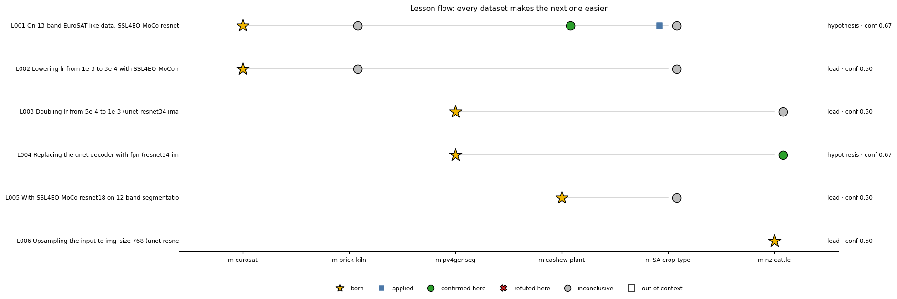
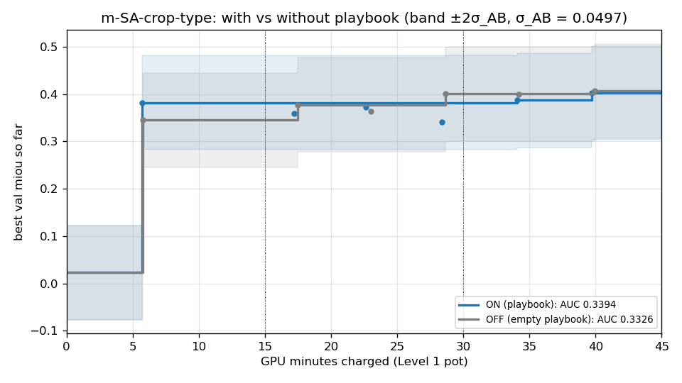
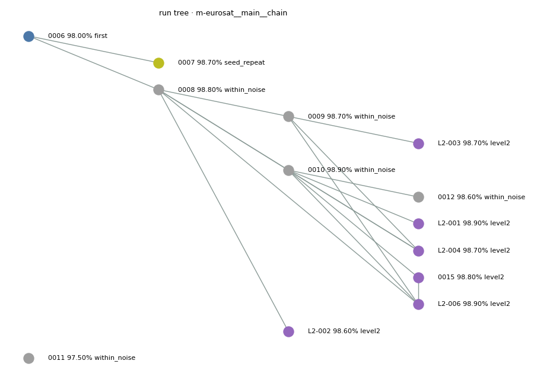
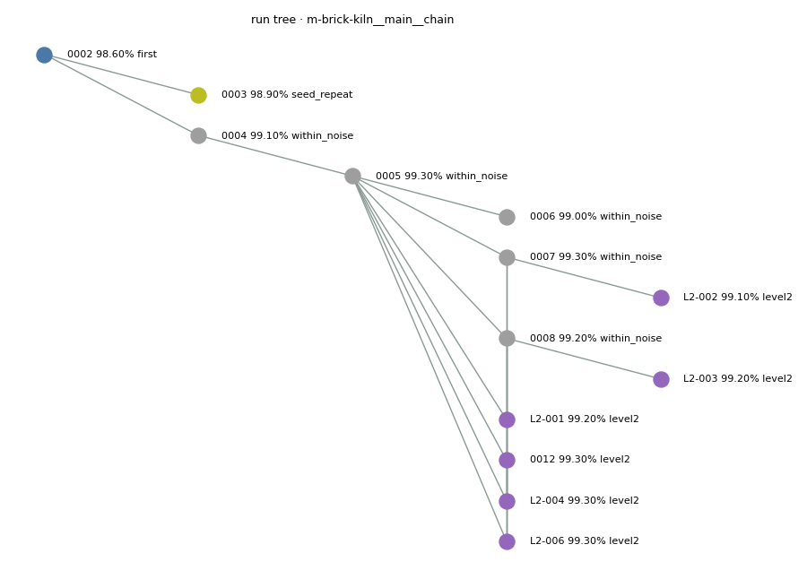
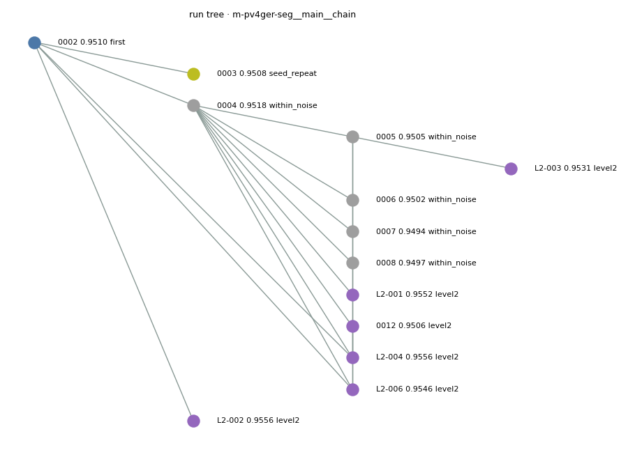
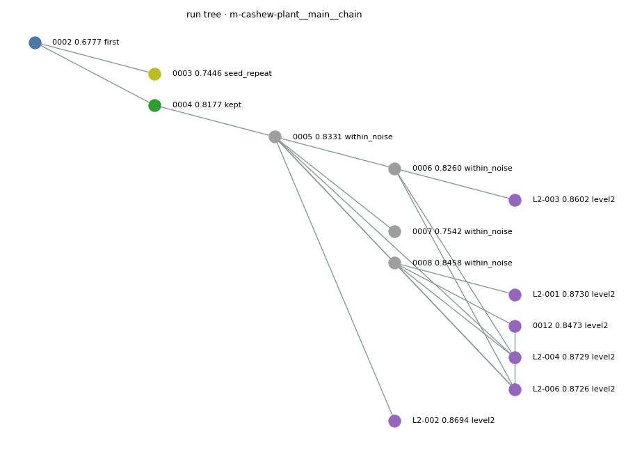
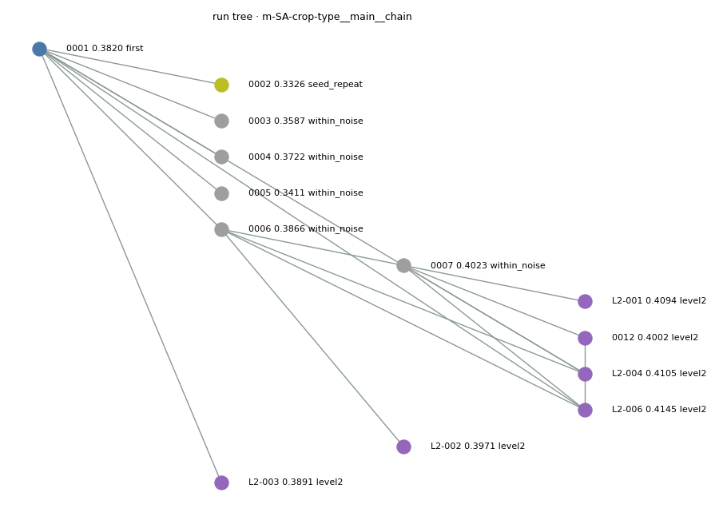
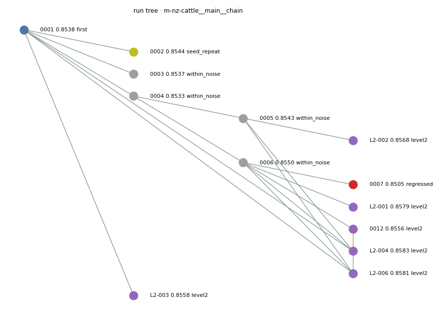

Generated by python -m gotrain.report from the ledger, vault, sessions, playbook and stats files. Test scores come from the vault (one test evaluation per dataset); intervals are 95% grouped bootstrap intervals from the hash-checked test_stats.npz.
| Task | Model | Val | Test (95% interval) | GEO-Bench reference | GPU-min L1 / L2 | Tokens | Lessons born / applied | Notes |
|---|---|---|---|---|---|---|---|---|
| m-eurosat | m-eurosat-L2-006 (composite) | 98.90% | 98.60% (97.80%–99.30%, 1000 groups) | 98.00% (not comparable: bands differ (3-channel reference, we use 13); benchmark classification v0.8.5 vs our v1.0) | 40.8 / 6.3 | 208,496 | 2 / 0 | INC-001 disclosed |
| m-brick-kiln | m-brick-kiln-L2-004 (composite) | 99.30% | 98.60% (97.80%–99.30%, 999 groups) | 98.87% (not comparable: bands differ (3-channel reference, we use 10); benchmark classification v0.8.5 vs our v1.0) | 40.8 / 6.2 | 188,252 | 0 / 0 | |
| m-pv4ger-seg | m-pv4ger-seg-L2-002 (composite) | 0.9556 | 0.9505 (0.9418–0.9579, 403 groups) | 0.9408 (roughly comparable: benchmark segmentation v0.4 vs our v1.0) | 40.7 / 7.5 | 188,292 | 2 / 0 | |
| m-cashew-plant | m-cashew-plant-L2-004 (composite) | 0.8729 | 0.8729 (0.8709–0.8755, 2 groups) | 0.4873 (not comparable: bands differ (3-channel reference, we use 12); benchmark segmentation v0.4 vs our v1.0; class 0 ('no data') ignored by us, counted by the reference) | 40.6 / 7.2 | 203,781 | 1 / 0 | |
| m-SA-crop-type | — | — | not finalized | 0.3041 (not comparable: bands differ (3-channel reference, we use 12); benchmark segmentation v0.4 vs our v1.0; class 0 ('no data') ignored by us, counted by the reference) | 39.7 / 8.6 | 199,328 | 0 / 1 | INC-002 disclosed |
| m-nz-cattle | m-nz-cattle-L2-004 (composite) | 0.8583 | 0.8531 (0.8450–0.8615, 63 groups) | 0.8107 (roughly comparable: benchmark segmentation v0.4 vs our v1.0) | 40.8 / 6.7 | 249,161 | 1 / 0 |


| Task | Run | Mechanism | Members | Val | Promoted |
|---|---|---|---|---|---|
| m-eurosat | m-eurosat-0015 | trained slot | m-eurosat-0010 | 98.80% | no |
| m-eurosat | m-eurosat-L2-001 | tta | m-eurosat-0010 +TTA | 98.90% | no |
| m-eurosat | m-eurosat-L2-002 | tta | m-eurosat-0008 +TTA | 98.60% | no |
| m-eurosat | m-eurosat-L2-003 | tta | m-eurosat-0009 +TTA | 98.70% | no |
| m-eurosat | m-eurosat-L2-004 | ensemble | m-eurosat-0010, m-eurosat-0008, m-eurosat-0009 | 98.70% | no |
| m-eurosat | m-eurosat-L2-006 | ensemble | m-eurosat-0010, m-eurosat-0008, m-eurosat-0009, m-eurosat-0015 | 98.90% | yes |
| m-brick-kiln | m-brick-kiln-0012 | trained slot | m-brick-kiln-0005 | 99.30% | no |
| m-brick-kiln | m-brick-kiln-L2-001 | tta | m-brick-kiln-0005 +TTA | 99.20% | no |
| m-brick-kiln | m-brick-kiln-L2-002 | tta | m-brick-kiln-0007 +TTA | 99.10% | no |
| m-brick-kiln | m-brick-kiln-L2-003 | tta | m-brick-kiln-0008 +TTA | 99.20% | no |
| m-brick-kiln | m-brick-kiln-L2-004 | ensemble | m-brick-kiln-0005, m-brick-kiln-0007, m-brick-kiln-0008 | 99.30% | yes |
| m-brick-kiln | m-brick-kiln-L2-006 | ensemble | m-brick-kiln-0005, m-brick-kiln-0007, m-brick-kiln-0008, m-brick-kiln-0012 | 99.30% | no |
| m-pv4ger-seg | m-pv4ger-seg-0012 | trained slot | m-pv4ger-seg-0004 | 0.9506 | no |
| m-pv4ger-seg | m-pv4ger-seg-L2-001 | tta | m-pv4ger-seg-0004 +TTA | 0.9552 | no |
| m-pv4ger-seg | m-pv4ger-seg-L2-002 | tta | m-pv4ger-seg-0002 +TTA | 0.9556 | yes |
| m-pv4ger-seg | m-pv4ger-seg-L2-003 | tta | m-pv4ger-seg-0005 +TTA | 0.9531 | no |
| m-pv4ger-seg | m-pv4ger-seg-L2-004 | ensemble | m-pv4ger-seg-0004 +TTA, m-pv4ger-seg-0002 +TTA, m-pv4ger-seg-0005 +TTA | 0.9556 | no |
| m-pv4ger-seg | m-pv4ger-seg-L2-006 | ensemble | m-pv4ger-seg-0004 +TTA, m-pv4ger-seg-0002 +TTA, m-pv4ger-seg-0005 +TTA, m-pv4ger-seg-0012 | 0.9546 | no |
| m-cashew-plant | m-cashew-plant-0012 | trained slot | m-cashew-plant-0008 | 0.8473 | no |
| m-cashew-plant | m-cashew-plant-L2-001 | tta | m-cashew-plant-0008 +TTA | 0.8730 | no |
| m-cashew-plant | m-cashew-plant-L2-002 | tta | m-cashew-plant-0005 +TTA | 0.8694 | no |
| m-cashew-plant | m-cashew-plant-L2-003 | tta | m-cashew-plant-0006 +TTA | 0.8602 | no |
| m-cashew-plant | m-cashew-plant-L2-004 | ensemble | m-cashew-plant-0008 +TTA, m-cashew-plant-0005 +TTA, m-cashew-plant-0006 +TTA | 0.8729 | yes |
| m-cashew-plant | m-cashew-plant-L2-006 | ensemble | m-cashew-plant-0008 +TTA, m-cashew-plant-0005 +TTA, m-cashew-plant-0006 +TTA, m-cashew-plant-0012 | 0.8726 | no |
| m-SA-crop-type | m-SA-crop-type-0012 | trained slot | m-SA-crop-type-0007 | 0.4002 | no |
| m-SA-crop-type | m-SA-crop-type-L2-001 | tta | m-SA-crop-type-0007 +TTA | 0.4094 | no |
| m-SA-crop-type | m-SA-crop-type-L2-002 | tta | m-SA-crop-type-0006 +TTA | 0.3971 | no |
| m-SA-crop-type | m-SA-crop-type-L2-003 | tta | m-SA-crop-type-0001 +TTA | 0.3891 | yes |
| m-SA-crop-type | m-SA-crop-type-L2-004 | ensemble | m-SA-crop-type-0007 +TTA, m-SA-crop-type-0006 +TTA, m-SA-crop-type-0001 +TTA | 0.4105 | yes |
| m-SA-crop-type | m-SA-crop-type-L2-006 | ensemble | m-SA-crop-type-0007 +TTA, m-SA-crop-type-0006 +TTA, m-SA-crop-type-0001 +TTA, m-SA-crop-type-0012 | 0.4145 | yes |
| m-nz-cattle | m-nz-cattle-0012 | trained slot | m-nz-cattle-0006 | 0.8556 | no |
| m-nz-cattle | m-nz-cattle-L2-001 | tta | m-nz-cattle-0006 +TTA | 0.8579 | no |
| m-nz-cattle | m-nz-cattle-L2-002 | tta | m-nz-cattle-0005 +TTA | 0.8568 | no |
| m-nz-cattle | m-nz-cattle-L2-003 | tta | m-nz-cattle-0001 +TTA | 0.8558 | yes |
| m-nz-cattle | m-nz-cattle-L2-004 | ensemble | m-nz-cattle-0006 +TTA, m-nz-cattle-0005 +TTA, m-nz-cattle-0001 +TTA | 0.8583 | yes |
| m-nz-cattle | m-nz-cattle-L2-006 | ensemble | m-nz-cattle-0006 +TTA, m-nz-cattle-0005 +TTA, m-nz-cattle-0001 +TTA, m-nz-cattle-0012 | 0.8581 | no |
No flags.





